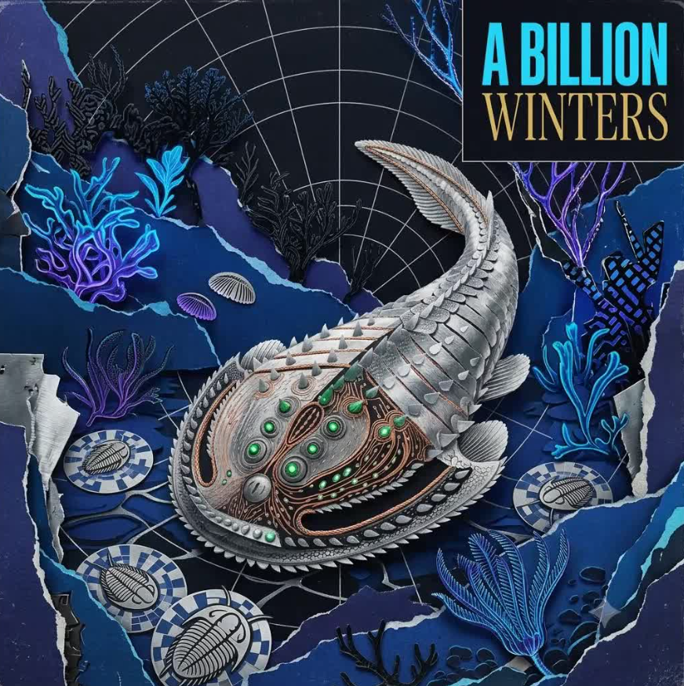
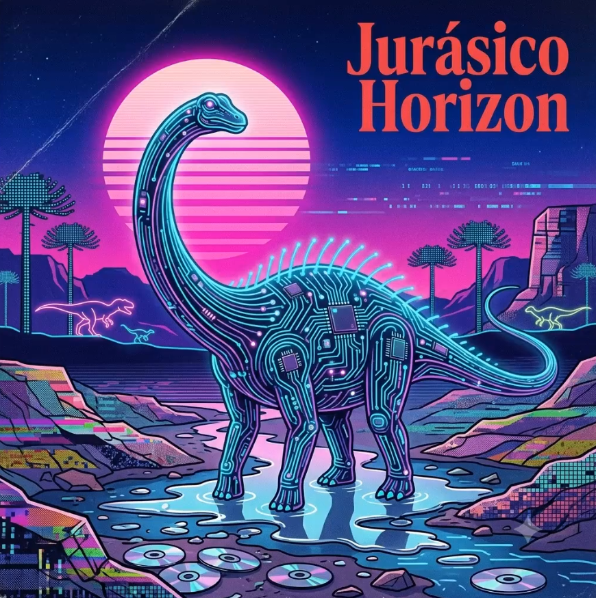
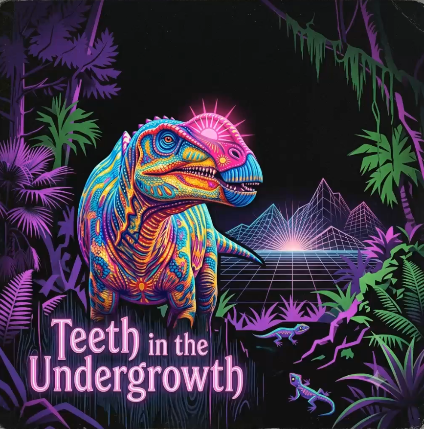
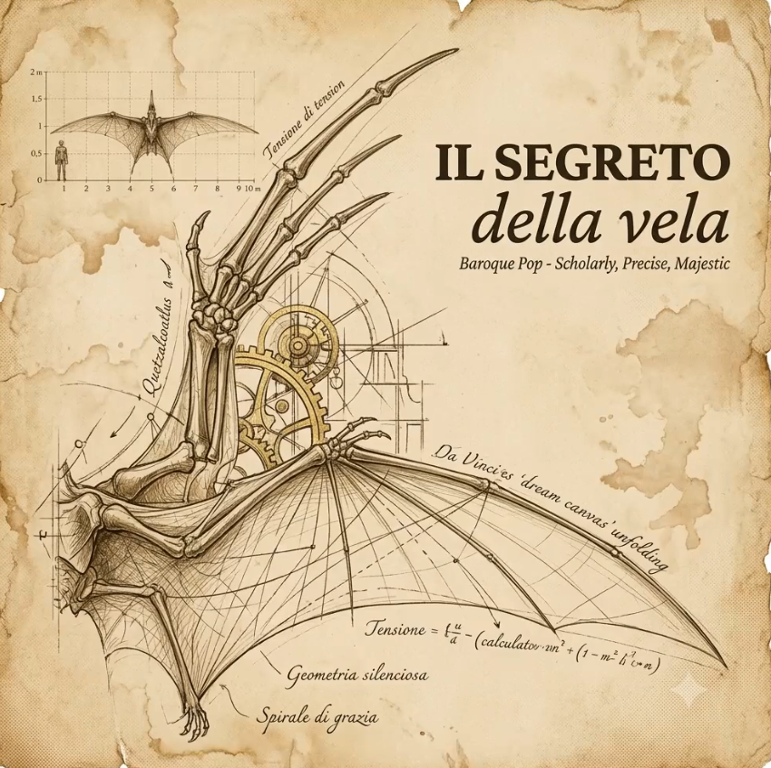
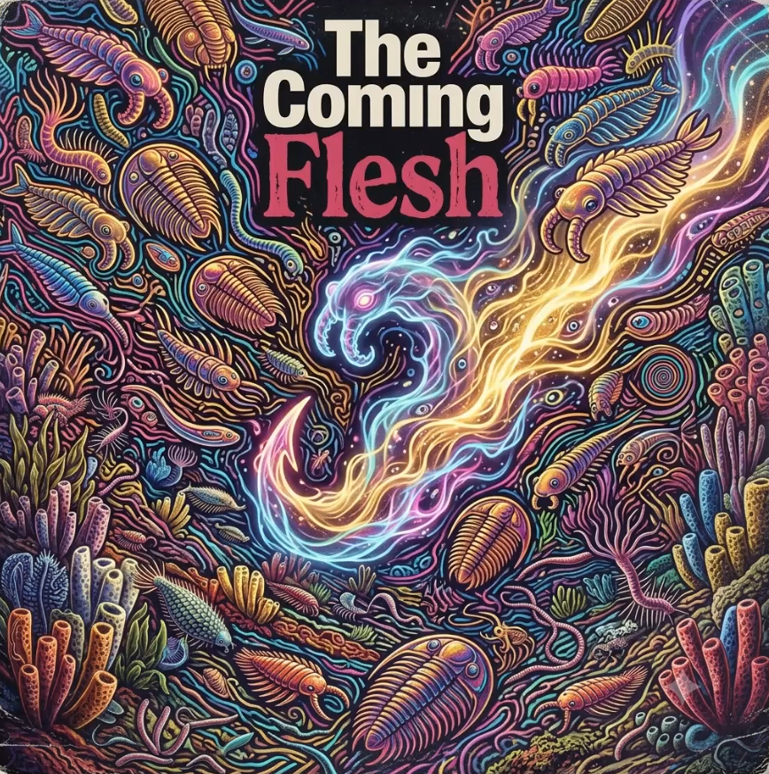
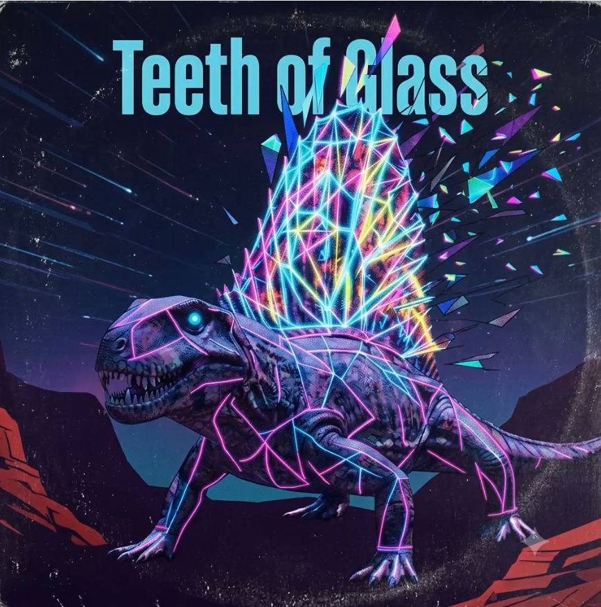

Pista 01
A Billion Winters
Ecos del Sílice

Pista 02
Jurásico Horizon
Ecos del Sílice

Pista 03
Teeth in the Undergrowth
Ecos del Sílice

Pista 04
Il Segreto della Vela
Ecos del Sílice

Pista 05
The Coming Flesh
Ecos del Sílice

Pista 06
Teeth of Glass
Ecos del Sílice